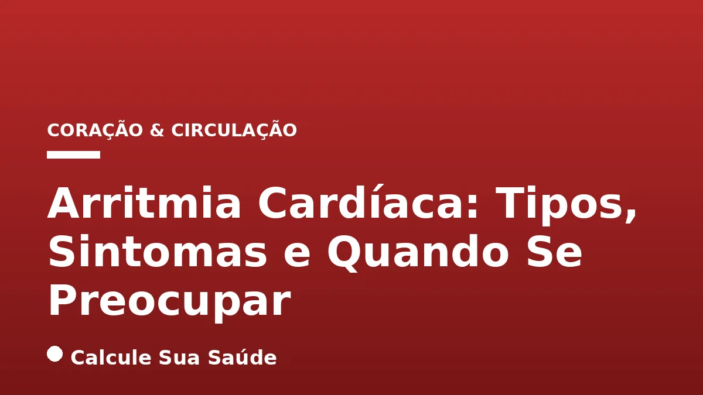

Aviso médico importante
Este conteúdo é educativo e informativo e não substitui a consulta, o diagnóstico ou o tratamento de um profissional de saúde. Em caso de sintomas, procure orientação médica.
Índice do Artigo
- 1. O Que É Arritmia Cardíaca? Entendendo o Ritmo do Coração
- 2. Classificação das Arritmias: Supraventriculares e Ventriculares
- 3. Causas e Fatores de Risco para o Desenvolvimento de Arritmias
- 4. Sintomas da Arritmia Cardíaca: Um Alerta do Seu Corpo
- 5. Quando Se Preocupar e Procurar Ajuda Médica
- 6. Diagnóstico da Arritmia Cardíaca: Ferramentas e Procedimentos
- 7. Prevenção da Arritmia Cardíaca: Um Estilo de Vida Saudável
- 8. Tratamentos para Arritmia Cardíaca: Abordagens Baseadas em Evidências
- 9. Mitos e Verdades Sobre a Arritmia Cardíaca
- 10. Arritmias em Diferentes Faixas Etárias: O Que Muda?
- 11. O Impacto das Arritmias na Qualidade de Vida e Complicações
- 12. Arritmias e Outras Condições de Saúde: Conexões Importantes
- 13. O Papel da Genética nas Arritmias Cardíacas
- 14. Monitoramento e Autocuidado para Pacientes com Arritmia
- 15. Arritmia Cardíaca e Gravidez: Cuidados Específicos
- 16. Quando a Arritmia É uma Emergência: Sinais Críticos
- 17. A Importância da Adesão ao Tratamento e Acompanhamento
- 18. Perspectivas Futuras no Tratamento das Arritmias
- 19. Perguntas frequentes
O coração humano, um órgão vital e incansável, bate em um ritmo constante e coordenado, impulsionado por um complexo sistema elétrico. No entanto, quando esse sistema sofre alguma falha, o ritmo cardíaco pode se desorganizar, dando origem ao que conhecemos como arritmia cardíaca. Essa condição, que afeta milhões de pessoas em todo o mundo, pode se manifestar de diversas formas, desde batimentos inofensivos e esporádicos até alterações graves que ameaçam a vida.
Compreender a arritmia cardíaca é fundamental para a saúde cardiovascular. Em um portal dedicado à saúde baseada em evidências, como o Calcule Sua Saúde, é nosso dever fornecer informações precisas e aprofundadas sobre essa condição. Este artigo visa desmistificar a arritmia, explorando seus tipos, as causas subjacentes, os sintomas que servem como alerta e, crucialmente, quando a preocupação se justifica e a busca por avaliação médica se torna imperativa.
Navegaremos pelos conceitos essenciais, desde a definição de um ritmo cardíaco normal até as complexidades das arritmias supraventriculares e ventriculares. Abordaremos os fatores de risco, as ferramentas diagnósticas e as estratégias de prevenção e tratamento com respaldo científico, sempre com o objetivo de capacitar você a cuidar melhor do seu coração e a tomar decisões informadas sobre sua saúde.
Em resumo
- Arritmia cardíaca é uma alteração no ritmo normal do coração, podendo ser rápida (taquicardia), lenta (bradicardia) ou irregular.
- A frequência cardíaca normal em repouso varia entre 60 e 100 bpm para adultos, com variações para crianças, atletas e idosos.
- Existem arritmias supraventriculares (originadas nos átrios) e ventriculares (originadas nos ventrículos), com a fibrilação atrial sendo a mais comum.
- Sintomas comuns incluem palpitações, dor no peito, falta de ar, tontura e desmaio, mas algumas arritmias são assintomáticas.
- É crucial procurar avaliação médica se os batimentos forem irregulares, muito rápidos ou muito lentos sem causa aparente, pois algumas arritmias podem ser graves.
- O diagnóstico envolve ECG, Holter, ecocardiograma e, em casos específicos, estudo eletrofisiológico, enquanto o tratamento pode incluir medicamentos, cardioversão, ablação por cateter ou implante de dispositivos como marca-passo.
1. O Que É Arritmia Cardíaca? Entendendo o Ritmo do Coração
A arritmia cardíaca, em sua essência, é uma desordem no sistema elétrico que governa os batimentos do coração. Imagine o coração como uma orquestra perfeitamente sincronizada, onde cada batida é um movimento coordenado. Os impulsos elétricos funcionam como o maestro, garantindo que as quatro câmaras cardíacas (dois átrios e dois ventrículos) se contraiam e relaxem em uma sequência precisa, bombeando sangue de forma eficiente para todo o corpo.
Quando esses impulsos elétricos não funcionam como deveriam – seja por uma falha na sua geração ou na sua condução – o ritmo cardíaco pode se alterar. Essa alteração pode se manifestar de três maneiras principais:
- Taquicardia: O coração bate demasiado rápido, geralmente acima de 100 batimentos por minuto (bpm) em repouso.
- Bradicardia: O coração bate demasiado devagar, geralmente abaixo de 50 bpm em repouso.
- Ritmo Irregular ou Descompassado: Os batimentos ocorrem de forma errática, sem um padrão regular.
A frequência cardíaca normal em repouso para a maioria dos adultos saudáveis situa-se entre 60 e 100 batimentos por minuto. No entanto, é importante notar que esses valores não são absolutos e podem variar significativamente dependendo da idade, nível de condicionamento físico e outras condições de saúde.
Variações da Frequência Cardíaca Normal
A percepção do que é um ritmo cardíaco “normal” pode mudar em diferentes grupos:
- Crianças: Tendem a ter batimentos mais rápidos. Bebês, por exemplo, podem apresentar de 120 a 140 bpm, enquanto crianças um pouco mais velhas podem ter entre 70 e 120 bpm.
- Atletas: Indivíduos altamente condicionados fisicamente, como atletas de elite, podem ter frequências cardíacas em repouso inferiores a 50 bpm. Isso é geralmente um sinal de um coração forte e eficiente, e não indica um problema de saúde.
- Idosos: Com o processo natural de envelhecimento, o sistema elétrico do coração pode se tornar mais lento. Assim, é comum que idosos apresentem batimentos em repouso que se aproximam do limite inferior de 50 bpm.
Entender essas variações é crucial para não confundir uma adaptação fisiológica com uma condição patológica. A avaliação médica é sempre o caminho para diferenciar essas situações.
2. Classificação das Arritmias: Supraventriculares e Ventriculares
As arritmias cardíacas são classificadas principalmente pela sua origem no coração. Essa distinção é fundamental para o diagnóstico e a escolha do tratamento mais adequado, pois as implicações e a gravidade podem variar consideravelmente.
Arritmias Supraventriculares
As arritmias supraventriculares (ASV) são aquelas que têm origem nas câmaras superiores do coração, ou seja, nos átrios, ou na junção atrioventricular (a área que conecta os átrios aos ventrículos). Geralmente, são menos perigosas do que as ventriculares, mas ainda podem causar sintomas significativos e, em alguns casos, complicações.
- Taquicardia Sinusal: É um ritmo cardíaco acelerado (acima de 100 bpm) que se origina no nó sinusal, o 'marca-passo natural' do coração. Pode ser uma resposta fisiológica normal ao estresse, exercício, febre ou ansiedade. No entanto, também pode ser um sinal de condições subjacentes como anemia, hipertireoidismo ou desidratação.
- Bradicardia: Batimentos mais lentos que o normal (abaixo de 50 bpm). Pode ser fisiológica em atletas, mas também pode ser causada por disfunção do nó sinusal, certos medicamentos ou bloqueios na condução elétrica.
- Extrassístoles Atriais: São batimentos cardíacos precoces ou 'fora de hora' que se originam nos átrios. Muitas pessoas as sentem como uma 'falha' ou 'salto' no batimento. São muito comuns e, na maioria das vezes, benignas, não necessitando de tratamento específico, a menos que sejam muito frequentes ou sintomáticas.
- Fibrilação Atrial (FA): É o tipo mais comum de arritmia sustentada e uma das mais importantes clinicamente. Caracteriza-se por um ritmo irregular e desorganizado nos átrios, que tremem em vez de se contrair eficientemente. Isso pode levar à formação de coágulos sanguíneos nos átrios, aumentando significativamente o risco de Acidente Vascular Cerebral (AVC).
- Flutter Atrial: Um ritmo rápido e regular, mas anormal, nos átrios. Embora mais organizado que a fibrilação atrial, também pode aumentar o risco de AVC e necessita de tratamento.
- Arritmia Sinusal Respiratória: Uma variação normal da frequência cardíaca que ocorre com a respiração, sendo mais pronunciada em crianças e jovens. É considerada totalmente benigna.
Arritmias Ventriculares
As arritmias ventriculares (AV) são aquelas que se originam nas câmaras inferiores do coração, os ventrículos. Estas são frequentemente mais graves e podem ser potencialmente fatais, pois os ventrículos são responsáveis por bombear o sangue para o resto do corpo.
- Extrassístoles Ventriculares: Semelhantes às atriais, são batimentos precoces que se originam nos ventrículos. Podem ser sentidas como palpitações. Embora muitas sejam benignas, a presença de extrassístoles ventriculares frequentes ou em corações com doença estrutural pode indicar um risco maior.
- Taquicardia Ventricular (TV): Caracteriza-se por batimentos rápidos e regulares que se originam nos ventrículos. A TV sustentada pode ser uma emergência médica, pois impede o coração de bombear sangue de forma eficaz, podendo levar à perda de consciência e, se não tratada, evoluir para fibrilação ventricular.
- Fibrilação Ventricular (FV): É a arritmia mais grave e uma das principais causas de morte súbita cardíaca. Os ventrículos tremem de forma caótica e ineficaz, incapazes de bombear sangue. Requer desfibrilação imediata para restaurar o ritmo cardíaco normal.
- Bloqueios Atrioventriculares (AV): São problemas na condução elétrica entre os átrios e os ventrículos, que podem causar bradicardia severa. Em casos graves, podem levar a síncope (desmaio) ou morte súbita, exigindo frequentemente o implante de um marca-passo.
3. Causas e Fatores de Risco para o Desenvolvimento de Arritmias
As arritmias cardíacas podem ser desencadeadas por uma vasta gama de fatores, desde condições genéticas até hábitos de vida e outras doenças. Compreender essas causas e fatores de risco é essencial para a prevenção e o manejo eficaz da condição.
Doenças Cardíacas Estruturais e Funcionais
A presença de doenças cardíacas preexistentes é um dos principais fatores de risco para arritmias. Qualquer condição que afete a estrutura ou a função do coração pode perturbar seu sistema elétrico:
- Doença Arterial Coronariana: O estreitamento das artérias que irrigam o coração pode levar a infartos, que deixam cicatrizes no tecido cardíaco. Essas cicatrizes podem interferir na condução elétrica normal.
- Infarto do Miocárdio (Ataque Cardíaco): Danos ao músculo cardíaco causados por um infarto são uma causa comum de arritmias, especialmente as ventriculares.
- Insuficiência Cardíaca: Um coração enfraquecido e incapaz de bombear sangue eficientemente é mais propenso a desenvolver arritmias.
- Doenças nas Válvulas do Coração (Valvulopatias): Válvulas cardíacas que não funcionam corretamente podem sobrecarregar o coração e alterar seu ritmo.
- Cardiomiopatias: Doenças do músculo cardíaco que afetam sua capacidade de bombear sangue.
- Doença de Chagas: Uma doença parasitária que pode causar danos crônicos ao coração, levando a arritmias graves.
- Defeitos Cardíacos Congênitos: Algumas pessoas nascem com anomalias na estrutura do coração que as predispõem a arritmias.
Condições Médicas e Desequilíbrios
Diversas outras condições de saúde podem influenciar o sistema elétrico do coração:
- Desequilíbrio Eletrolítico: Alterações nos níveis de íons essenciais no sangue, como potássio, magnésio e cálcio, são causas frequentes de arritmias, pois esses eletrólitos são cruciais para a atividade elétrica das células cardíacas.
- Doenças da Tireoide: Tanto o hipertireoidismo (tireoide hiperativa) quanto o hipotireoidismo (tireoide hipoativa) podem afetar o ritmo cardíaco. O hipertireoidismo, em particular, pode causar taquicardias.
- Hipertensão Arterial Sistêmica (HAS): A pressão alta não controlada pode levar ao espessamento do músculo cardíaco, aumentando o risco de arritmias.
- Diabetes Mellitus: O diabetes pode danificar os nervos que controlam o coração e os vasos sanguíneos, contribuindo para o desenvolvimento de arritmias. Para mais informações sobre o controle do açúcar no sangue, veja nosso artigo sobre diabetes tipo 2.
- Obesidade: A obesidade está associada a diversas condições que aumentam o risco de arritmias, incluindo hipertensão, diabetes e apneia do sono.
- Síndrome da Apneia e Hipopneia Obstrutiva do Sono (SAHOS): Interrupções repetidas na respiração durante o sono podem causar estresse no coração e levar a arritmias.
- Anemia e Febre: Ambas as condições aumentam a demanda de trabalho do coração, podendo precipitar arritmias.
- Baixos Níveis de Oxigênio no Sangue (Hipóxia): A falta de oxigênio pode irritar o músculo cardíaco e causar disfunções elétricas.
Estilo de Vida e Substâncias
Hábitos e o uso de certas substâncias também desempenham um papel significativo:
- Consumo Excessivo de Álcool: O álcool pode afetar diretamente as células cardíacas e o sistema elétrico, sendo um gatilho conhecido para arritmias, especialmente a fibrilação atrial (fenômeno conhecido como “síndrome do coração de férias”). Para entender mais sobre os impactos do álcool na saúde, confira nosso artigo sobre consumo excessivo de álcool.
- Tabagismo (Fumo): A nicotina e outras substâncias químicas do tabaco são estimulantes cardíacos e danificam os vasos sanguíneos, aumentando o risco de arritmias e outras doenças cardíacas.
- Cafeína e Bebidas Energéticas: Em indivíduos sensíveis ou em grandes quantidades, a cafeína e outros estimulantes presentes em bebidas energéticas podem causar palpitações e desencadear arritmias.
- Uso de Certos Medicamentos: Alguns fármacos, incluindo descongestionantes, anti-histamínicos, supressores de apetite e medicamentos para asma, podem ter efeitos colaterais que afetam o ritmo cardíaco.
- Estresse e Ansiedade: O estresse crônico e a ansiedade podem liberar hormônios que aceleram o coração e o tornam mais propenso a arritmias. Entender o impacto do estresse crônico é crucial para a saúde geral.
- Falta de Atividade Física: O sedentarismo contribui para o desenvolvimento de fatores de risco como obesidade, hipertensão e diabetes, que, por sua vez, aumentam a probabilidade de arritmias.
- Colesterol e Triglicerídeos Elevados: Níveis altos de colesterol e triglicerídeos contribuem para a doença arterial coronariana, um fator de risco para arritmias.
Outros Fatores
- Envelhecimento: Aumenta a predisposição para problemas no sistema elétrico do coração.
- Herança Genética: Algumas arritmias têm um componente genético, sendo mais comuns em famílias com histórico da condição.
4. Sintomas da Arritmia Cardíaca: Um Alerta do Seu Corpo
Os sintomas da arritmia cardíaca são variados e dependem do tipo, da gravidade e da frequência com que ocorrem. É importante ressaltar que algumas arritmias podem ser completamente assintomáticas, sendo descobertas apenas durante exames de rotina. No entanto, quando presentes, os sintomas podem ser bastante incômodos e, em alguns casos, indicativos de uma condição séria.
Sintomas Comuns
Os sinais e sintomas mais frequentemente relatados por pacientes com arritmia incluem:
- Palpitações: É a sensação de que o coração está batendo de forma anormal. Pode ser descrito como batimentos acelerados, lentos, fortes,
5. Quando Se Preocupar e Procurar Ajuda Médica
Embora muitas arritmias sejam benignas e não representem risco significativo, outras podem ser indicativas de problemas cardíacos sérios e, em casos extremos, podem ser fatais ou levar à morte súbita. Saber quando procurar ajuda médica é uma das informações mais cruciais para quem experimenta sintomas cardíacos.
Sinais de Alerta para Busca Imediata de Atendimento Médico
É fundamental procurar atendimento médico de emergência (pronto-socorro) se você ou alguém próximo apresentar os seguintes sintomas, especialmente se forem novos, intensos ou acompanhados de outros sinais de alerta:
- Desmaio (Síncope) ou Quase Desmaio: Perda súbita de consciência ou sensação iminente de desmaio.
- Dor ou Desconforto Intenso no Peito: Uma dor opressiva, aperto ou pontada forte que não melhora.
- Falta de Ar Súbita e Severa: Dificuldade para respirar que surge de repente ou piora rapidamente.
- Tontura ou Vertigem Severa: Sensação de que o ambiente está girando ou de instabilidade que impede as atividades normais.
- Palpitações Acompanhadas de Sintomas Graves: Se as palpitações vierem junto com dor no peito, falta de ar, tontura ou desmaio.
- Cansaço Extremo e Inexplicável: Uma fadiga avassaladora que não melhora com o repouso.
Esses sintomas podem indicar que a arritmia está afetando a capacidade do coração de bombear sangue de forma eficaz, o que pode levar a complicações sérias como Acidente Vascular Cerebral (AVC), insuficiência cardíaca ou morte súbita cardíaca.
Quando Agendar uma Consulta Médica
Mesmo que os sintomas não sejam emergenciais, é importante agendar uma consulta com um cardiologista se você:
- Perceber que seus batimentos cardíacos estão frequentemente irregulares, muito rápidos ou muito lentos sem uma causa aparente (como exercício físico intenso ou susto).
- Tiver histórico familiar de arritmias ou doenças cardíacas.
- Apresentar qualquer um dos sintomas listados anteriormente, mesmo que leves e intermitentes.
- Sentir um
6. Diagnóstico da Arritmia Cardíaca: Ferramentas e Procedimentos
O diagnóstico preciso da arritmia cardíaca é o primeiro passo para um tratamento eficaz. Ele geralmente começa com uma avaliação clínica detalhada, incluindo histórico médico e exame físico, e é complementado por uma série de exames específicos que ajudam a identificar o tipo e a causa da arritmia.
Avaliação Clínica e Exame Físico
O médico iniciará com uma conversa aprofundada sobre seus sintomas, histórico familiar de doenças cardíacas, hábitos de vida e uso de medicamentos. Durante o exame físico, serão verificados a pressão arterial, a frequência cardíaca e a ausculta do coração e pulmões para identificar possíveis sopros, ritmos irregulares ou outros sinais de doença cardíaca.
Exames Complementares Essenciais
Para confirmar a presença e o tipo de arritmia, diversos exames podem ser solicitados:
- Eletrocardiograma (ECG): É o exame mais básico, comum e principal para o diagnóstico de arritmias. O ECG registra a atividade elétrica do coração em um curto período, geralmente alguns segundos. Ele pode detectar arritmias presentes no momento do exame, identificar padrões de condução anormais e sinais de danos cardíacos prévios.
- ECG Portátil (Holter 24h ou Monitor de Eventos/Web-Loop): Para arritmias que ocorrem de forma intermitente e não são capturadas no ECG de repouso, o Holter é uma ferramenta valiosa. Ele registra continuamente a atividade elétrica do coração por 24 horas ou mais. Monitores de eventos ou web-loop podem ser usados por períodos ainda mais longos, permitindo ao paciente ativar a gravação quando sentir os sintomas.
- Teste Ergométrico (Teste de Esforço): Este exame avalia o comportamento do coração durante o esforço físico, que pode desencadear ou agravar algumas arritmias. O paciente caminha em uma esteira ou pedala em uma bicicleta ergométrica enquanto a atividade cardíaca é monitorada.
- Ecocardiograma: É um ultrassom do coração que fornece imagens detalhadas de sua estrutura e função. Ajuda a identificar doenças nas válvulas, problemas no músculo cardíaco, dilatações das câmaras e outras alterações estruturais que podem ser a causa da arritmia.
- Ressonância Magnética Cardíaca: Oferece imagens ainda mais detalhadas do coração, sendo útil para avaliar a estrutura do músculo cardíaco, cicatrizes pós-infarto e outras anomalias que podem predispor a arritmias.
- Estudo Eletrofisiológico (EEF): Considerado o
7. Prevenção da Arritmia Cardíaca: Um Estilo de Vida Saudável
A prevenção das arritmias cardíacas está intrinsecamente ligada à adoção de um estilo de vida saudável e ao controle rigoroso dos fatores de risco. Muitas das medidas preventivas são as mesmas recomendadas para a saúde cardiovascular geral, enfatizando a importância de hábitos que protegem o coração e o sistema circulatório.
Pilares da Prevenção
- Dieta Balanceada e Saudável: Uma alimentação rica em frutas, vegetais, grãos integrais, proteínas magras e gorduras saudáveis é fundamental. A baixa ingestão de sal e gorduras saturadas e trans ajuda a controlar a pressão arterial e os níveis de colesterol e triglicerídeos, reduzindo o risco de doenças cardíacas que podem levar a arritmias. A Dieta Mediterrânea, por exemplo, é amplamente reconhecida por seus benefícios cardiovasculares.
- Atividade Física Regular: A prática regular de exercícios físicos pode diminuir significativamente a ocorrência de arritmias cardíacas, especialmente a fibrilação atrial. O exercício fortalece o coração, melhora a circulação e ajuda a controlar o peso e a pressão arterial. No entanto, é crucial que a atividade física seja realizada sob orientação médica, pois em alguns casos, especialmente para indivíduos com certas arritmias ou doenças cardíacas preexistentes, atividades de alta intensidade podem não ser aconselhadas.
- Avaliação Médica Regular (Check-up): Consultas periódicas com um médico, mesmo na ausência de sintomas, são essenciais para o diagnóstico precoce de condições que podem levar a arritmias. Exames de rotina podem identificar fatores de risco e problemas cardíacos em estágios iniciais.
- Controle de Fatores de Risco: O gerenciamento eficaz de condições como diabetes tipo 2, obesidade, hipertensão arterial, e níveis elevados de colesterol e triglicerídeos é vital. O tratamento dessas condições reduz o estresse sobre o coração e minimiza a probabilidade de desenvolver arritmias.
- Evitar Tabagismo: Parar de fumar é uma das medidas mais eficazes para proteger o coração. O tabagismo é um potente fator de risco para doenças cardíacas e arritmias.
- Moderação no Consumo de Álcool e Estimulantes: O consumo excessivo de álcool, cafeína e bebidas energéticas pode desencadear ou agravar arritmias em indivíduos sensíveis. A moderação é a chave.
- Gerenciamento do Estresse e Ansiedade: Técnicas de relaxamento, meditação, ioga e outras estratégias para gerenciar o estresse crônico e a ansiedade podem ter um impacto positivo na saúde cardíaca, reduzindo a liberação de hormônios que podem afetar o ritmo cardíaco.
- Sono de Qualidade: Tratar distúrbios do sono, como a apneia do sono, é crucial, pois eles podem aumentar o risco de arritmias.
8. Tratamentos para Arritmia Cardíaca: Abordagens Baseadas em Evidências
O tratamento da arritmia cardíaca é uma abordagem personalizada, cuidadosamente adaptada às necessidades de cada paciente, considerando o tipo de arritmia, sua gravidade, a presença de outras condições médicas e o risco de complicações. As opções de tratamento são respaldadas por evidências clínicas e diretrizes médicas de instituições renomadas.
Medicamentos Antiarrítmicos
Frequentemente, a primeira linha de tratamento para muitas arritmias envolve o uso de medicamentos. Os antiarrítmicos atuam modificando a condução de impulsos elétricos no coração, ajudando a restaurar e manter um ritmo cardíaco normal. Existem diferentes classes de antiarrítmicos, e a escolha depende do tipo específico de arritmia e do perfil do paciente. Além dos antiarrítmicos, outros medicamentos podem ser usados para controlar a frequência cardíaca ou para prevenir complicações, como os anticoagulantes, que são essenciais para reduzir o risco de AVC em pacientes com fibrilação atrial.
Procedimentos Invasivos
Quando os medicamentos não são suficientes ou não são bem tolerados, procedimentos invasivos podem ser indicados:
- Cardioversão Elétrica: Este procedimento é realizado sob sedação e consiste na aplicação de um choque elétrico controlado no tórax do paciente. O objetivo é 'resetar' o sistema elétrico do coração, revertendo arritmias como a fibrilação atrial ou o flutter atrial para um ritmo sinusal normal.
- Ablação por Cateter: É um procedimento minimamente invasivo que visa cauterizar ou congelar (crioablação) pequenas áreas do tecido cardíaco que estão gerando ou conduzindo impulsos elétricos anormais. Com o avanço da tecnologia, o uso de mapeamento eletroanatômico tridimensional tornou a ablação mais precisa, eficaz e segura, diminuindo o tempo do procedimento e o risco de complicações. É uma opção curativa para muitos tipos de taquicardias.
Implante de Dispositivos Cardíacos Eletrônicos (DCEI)
Para arritmias que não respondem a outras terapias ou que representam um risco significativo, o implante de dispositivos eletrônicos pode ser a solução:
- Marca-passo (MP): É um pequeno dispositivo implantado sob a pele, geralmente no peito, com fios que se conectam ao coração. Ele monitora o ritmo cardíaco e envia impulsos elétricos quando o coração bate muito devagar (bradicardia) ou quando há bloqueios na condução, garantindo a regularidade dos batimentos.
- Cardioversor Desfibrilador Implantável (CDI): Similar ao marca-passo, o CDI é implantado para pacientes com alto risco de arritmias ventriculares graves e morte súbita. Ele monitora continuamente o ritmo cardíaco e, se detectar uma arritmia perigosa, pode enviar choques elétricos para restaurar o ritmo normal, atuando como um 'desfibrilador interno'.
- Ressincronizador Cardíaco (TRC): Utilizado em casos específicos de insuficiência cardíaca, o ressincronizador ajuda a coordenar os batimentos dos ventrículos, melhorando a função de bombeamento do coração.
Nível de Evidência e Recomendações
As fontes pesquisadas, incluindo hospitais de referência (Einstein, Mayo Clinic), sociedades médicas (SOBRAC) e serviços de saúde (SNS24), indicam que esses tratamentos são amplamente respaldados por evidências clínicas e diretrizes médicas internacionais. Embora o
9. Mitos e Verdades Sobre a Arritmia Cardíaca
No campo da saúde, muitas vezes, informações imprecisas ou incompletas podem gerar mitos que dificultam a compreensão e o manejo correto das condições. A arritmia cardíaca não é exceção. É fundamental separar o que a ciência diz do que é apenas crença popular.
Mito: Arritmias cardíacas sempre são malignas.
Fato: Esta é uma das maiores concepções errôneas. Existem arritmias benignas e malignas. Muitas pessoas experimentam extrassístoles (batimentos precoces) que são inofensivas e não representam risco significativo para a saúde. No entanto, outras arritmias, como a fibrilação ventricular, são emergências médicas e podem ser fatais. A gravidade depende do tipo de arritmia, da sua frequência e da presença de outras doenças cardíacas. Somente um médico pode determinar a natureza da sua arritmia.
Mito: A morte súbita acontece apenas em atletas/esportistas.
Fato: Embora casos de morte súbita em atletas jovens sejam tragicamente noticiados, qualquer pessoa está sujeita a este evento, independentemente da faixa etária, sexo ou condição socioeconômica. A maior porcentagem de ocorrência de morte súbita está em pessoas com doenças cardíacas preexistentes ou histórico familiar. Em atletas, a morte súbita é frequentemente associada a condições cardíacas congênitas não diagnosticadas.
Mito: O consumo excessivo de cafeína, bebidas energéticas ou álcool não causa arritmia.
Fato: O consumo excessivo dessas substâncias pode, sim, estimular o coração, causando palpitações e desencadeando arritmias, especialmente em indivíduos sensíveis ou predispostos. O álcool, em grandes quantidades, é um gatilho conhecido para arritmias como a fibrilação atrial, um fenômeno por vezes chamado de "síndrome do coração de férias". A cafeína e os estimulantes das bebidas energéticas podem aumentar a frequência cardíaca e a excitabilidade do músculo cardíaco.
Mito: Palpitações sempre indicam um problema cardíaco sério.
Fato: Palpitações podem estar associadas a arritmias, mas também podem ser causadas por uma série de fatores não cardíacos, como ansiedade, estresse, cansaço, insônia, desidratação, febre, anemia, alterações hormonais (gravidez, menopausa) ou o uso de certos medicamentos. É importante observar a frequência, a duração e os sintomas associados às palpitações. Se forem persistentes, acompanhadas de dor no peito, tontura ou desmaio, a avaliação médica é indispensável.
Mito: Pessoas com arritmia cardíaca não podem praticar atividades físicas.
Fato: A prática de atividades físicas pode ser muito benéfica para o coração, mesmo para pessoas com arritmia, dependendo do tipo de arritmia e do estado geral de saúde. O exercício regular fortalece o coração e melhora a saúde cardiovascular. No entanto, é crucial que qualquer programa de exercícios seja elaborado e supervisionado por um médico cardiologista, pois em alguns casos, atividades de alta intensidade ou certos tipos de exercícios podem não ser aconselhados ou exigir modificações.
Mito: A arritmia cardíaca não pode ser tratada com medicamentos.
Fato: Muitos tipos de arritmias cardíacas podem ser eficazmente controlados e tratados com o uso de medicamentos específicos, conhecidos como antiarrítmicos, que ajudam a regular o ritmo cardíaco. Além disso, medicamentos para controlar a frequência cardíaca ou para prevenir complicações (como anticoagulantes) são frequentemente parte do plano de tratamento. A escolha do medicamento depende da arritmia e das características individuais do paciente.
Mito: Somente indivíduos idosos têm arritmias cardíacas.
Fato: Embora a predisposição a arritmias aumente com a idade, elas podem acontecer em todas as idades, inclusive em crianças e, em alguns casos, até mesmo antes do nascimento (arritmias fetais). Condições congênitas, doenças cardíacas infantis ou fatores genéticos podem levar ao desenvolvimento de arritmias em jovens. Portanto, a idade não é um fator exclusivo para o surgimento dessa condição.
10. Arritmias em Diferentes Faixas Etárias: O Que Muda?
A manifestação e a relevância das arritmias cardíacas podem variar significativamente entre as diferentes faixas etárias, desde a infância até a velhice. Compreender essas particularidades é importante para o diagnóstico e manejo adequados.
Arritmias em Crianças e Adolescentes
Em crianças e adolescentes, algumas arritmias são fisiológicas e benignas, como a arritmia sinusal respiratória, que é uma variação normal da frequência cardíaca ligada à respiração. No entanto, outras arritmias podem ser decorrentes de doenças cardíacas congênitas ou condições genéticas. As frequências cardíacas normais em repouso são naturalmente mais elevadas em crianças (70-120 bpm) e bebês (120-140 bpm) do que em adultos. Sintomas como cansaço excessivo, desmaios ou baixo desempenho em atividades físicas podem ser sinais de alerta e exigem avaliação pediátrica e cardiológica.
Arritmias em Adultos Jovens e Atletas
Adultos jovens e atletas podem apresentar bradicardia sinusal fisiológica, ou seja, um ritmo cardíaco mais lento em repouso devido ao excelente condicionamento físico. No entanto, essa faixa etária também pode ser afetada por arritmias decorrentes de condições congênitas não diagnosticadas, como síndromes de pré-excitação (ex: Wolff-Parkinson-White) ou canalopatias (doenças dos canais iônicos do coração). O uso de substâncias estimulantes, como bebidas energéticas e drogas ilícitas, também pode desencadear arritmias nesse grupo. A morte súbita em atletas, embora rara, é um lembrete da importância da triagem cardíaca.
Arritmias em Idosos
Com o envelhecimento, o sistema elétrico do coração passa por um processo natural de degeneração, o que aumenta a predisposição para o desenvolvimento de arritmias. A fibrilação atrial é particularmente prevalente em idosos, e seu risco aumenta com a idade e a presença de outras comorbidades como hipertensão, diabetes e insuficiência cardíaca. A bradicardia também é mais comum devido à disfunção do nó sinusal ou bloqueios atrioventriculares. Os sintomas em idosos podem ser mais atípicos, como fadiga inexplicável ou confusão mental, e exigem atenção especial.
11. O Impacto das Arritmias na Qualidade de Vida e Complicações
As arritmias cardíacas podem ter um impacto significativo na qualidade de vida dos indivíduos, mesmo aquelas consideradas benignas. Quando não tratadas ou quando são de natureza mais grave, podem levar a complicações sérias e potencialmente fatais.
Impacto na Qualidade de Vida
Os sintomas de arritmia, como palpitações frequentes, tontura, falta de ar e cansaço, podem ser debilitantes. Eles podem causar ansiedade e medo, levando à restrição de atividades diárias, sociais e profissionais. O receio de um desmaio ou de um evento cardíaco grave pode gerar um ciclo de estresse que, por sua vez, pode agravar as arritmias. A necessidade de medicação contínua ou de procedimentos invasivos também pode afetar o bem-estar psicológico e físico do paciente.
Complicações Graves
As arritmias que afetam a capacidade do coração de bombear sangue de forma eficaz podem levar a complicações sérias:
- Acidente Vascular Cerebral (AVC): A fibrilação atrial é a principal causa de AVC de origem cardíaca. Devido ao ritmo irregular dos átrios, o sangue pode estagnar e formar coágulos. Se um desses coágulos se desprender e viajar até o cérebro, pode bloquear uma artéria, causando um AVC isquêmico. Este é um dos motivos pelos quais o tratamento da FA frequentemente inclui anticoagulantes. Para mais informações, consulte nosso artigo sobre AVC (Derrame): Tipos, Sintomas e Ação Imediata.
- Insuficiência Cardíaca: Arritmias persistentes, especialmente as taquicardias rápidas e prolongadas, podem enfraquecer o músculo cardíaco ao longo do tempo, levando à insuficiência cardíaca. O coração torna-se menos eficiente em bombear sangue, resultando em sintomas como falta de ar, inchaço e fadiga.
- Morte Súbita Cardíaca: Algumas arritmias ventriculares, como a fibrilação ventricular, são extremamente perigosas e podem levar à parada cardíaca e morte súbita se não forem tratadas imediatamente com desfibrilação. Pacientes com alto risco de morte súbita podem se beneficiar do implante de um cardioversor desfibrilador.
A detecção precoce e o manejo adequado das arritmias são cruciais para prevenir essas complicações e preservar a qualidade de vida do paciente.
12. Arritmias e Outras Condições de Saúde: Conexões Importantes
As arritmias cardíacas raramente ocorrem de forma isolada. Elas frequentemente estão interligadas a outras condições de saúde, que podem tanto ser causas quanto consequências ou fatores agravantes. Compreender essas conexões é vital para uma abordagem diagnóstica e terapêutica holística.
Doenças Metabólicas e Endócrinas
- Diabetes Mellitus: Pacientes com diabetes tipo 2 têm um risco aumentado de desenvolver diversas arritmias, incluindo fibrilação atrial. O diabetes pode causar danos aos pequenos vasos sanguíneos e nervos que controlam o coração, além de promover inflamação e fibrose cardíaca.
- Obesidade: A obesidade é um fator de risco independente para a fibrilação atrial e outras arritmias. Ela está associada a hipertensão, diabetes, apneia do sono e alterações estruturais no coração, todos os quais contribuem para a arritmogenese.
- Doenças da Tireoide: O hipertireoidismo (tireoide hiperativa) pode causar taquicardias, palpitações e fibrilação atrial devido ao aumento da sensibilidade do coração às catecolaminas. O hipotireoidismo, por sua vez, pode levar à bradicardia.
- Desequilíbrios Eletrolíticos: Alterações nos níveis de potássio, magnésio e cálcio no sangue são causas diretas de arritmias, pois esses eletrólitos são essenciais para a geração e condução dos impulsos elétricos cardíacos.
Distúrbios do Sono
- Síndrome da Apneia e Hipopneia Obstrutiva do Sono (SAHOS): A apneia do sono é um fator de risco significativo para o desenvolvimento e a recorrência de fibrilação atrial, bradicardias e outras arritmias. As interrupções respiratórias noturnas levam a quedas nos níveis de oxigênio e aumentos na pressão intratorácica, estressando o coração.
Doenças Pulmonares
- Doença Pulmonar Obstrutiva Crônica (DPOC): Pacientes com DPOC frequentemente apresentam hipóxia (baixos níveis de oxigênio) e inflamação sistêmica, que podem predispor a arritmias, especialmente a fibrilação atrial e o flutter atrial.
Saúde Mental
- Estresse e Ansiedade: O estresse crônico e a ansiedade podem ativar o sistema nervoso simpático, levando a um aumento da frequência cardíaca e à liberação de hormônios que podem desencadear ou agravar arritmias em indivíduos predispostos. As palpitações são um sintoma comum de ansiedade.
A avaliação e o tratamento dessas condições subjacentes são, portanto, parte integrante do manejo abrangente das arritmias cardíacas.
13. O Papel da Genética nas Arritmias Cardíacas
Embora muitos fatores de risco para arritmias cardíacas sejam adquiridos ao longo da vida, a genética desempenha um papel crucial em uma parcela significativa dos casos. A herança genética pode predispor um indivíduo a desenvolver certas arritmias, mesmo na ausência de doenças cardíacas estruturais evidentes.
Arritmias Hereditárias
Existem diversas síndromes de arritmias hereditárias, muitas delas causadas por mutações em genes que codificam proteínas dos canais iônicos do coração (canalopatias) ou proteínas estruturais. Essas condições podem afetar a forma como os impulsos elétricos são gerados e conduzidos, levando a arritmias potencialmente graves. Exemplos incluem:
- Síndrome do QT Longo: Uma condição que afeta a repolarização do coração, aumentando o risco de taquicardia ventricular polimórfica (Torsades de Pointes) e morte súbita.
- Síndrome do QT Curto: O oposto da síndrome do QT longo, também associada a um risco aumentado de arritmias ventriculares graves.
- Síndrome de Brugada: Caracterizada por um padrão específico no ECG e um risco elevado de arritmias ventriculares e morte súbita, especialmente durante o sono ou febre.
- Taquicardia Ventricular Polimórfica Catecolaminérgica (TVPC): Uma arritmia desencadeada por estresse físico ou emocional, comum em jovens.
- Cardiomiopatia Arritmogênica do Ventrículo Direito (CAVD): Uma doença do músculo cardíaco que leva à substituição do tecido muscular por tecido fibroso e gorduroso, predispondo a arritmias ventriculares.
Histórico Familiar e Aconselhamento Genético
Se há um histórico de arritmias inexplicáveis, desmaios recorrentes ou morte súbita em idade jovem na família, é fundamental que o indivíduo procure avaliação cardiológica. O aconselhamento genético pode ser recomendado para identificar mutações genéticas e avaliar o risco em outros membros da família. O conhecimento da predisposição genética permite a implementação de estratégias de monitoramento e tratamento precoces, que podem ser cruciais para a prevenção de eventos graves.
É importante ressaltar que, mesmo com uma predisposição genética, o estilo de vida e o controle de outros fatores de risco ainda são importantes para modular a expressão da doença e o risco de eventos arrítmicos.
14. Monitoramento e Autocuidado para Pacientes com Arritmia
Para pacientes diagnosticados com arritmia cardíaca, o monitoramento contínuo e o autocuidado são componentes essenciais do manejo da condição. Essas práticas ajudam a controlar os sintomas, prevenir complicações e melhorar a qualidade de vida.
Monitoramento Regular
- Acompanhamento Médico: Consultas regulares com o cardiologista são cruciais para ajustar medicamentos, avaliar a eficácia do tratamento e monitorar a evolução da arritmia.
- Exames Periódicos: Exames como ECG, Holter e ecocardiograma podem ser repetidos periodicamente para reavaliar a condição do coração e a atividade elétrica.
- Monitoramento Domiciliar: Alguns pacientes podem se beneficiar do uso de dispositivos de monitoramento domiciliar, como monitores de pressão arterial e oxímetros de pulso, ou até mesmo dispositivos vestíveis (wearables) que registram o ritmo cardíaco, sob orientação médica.
Estratégias de Autocuidado
- Adesão ao Tratamento: Seguir rigorosamente as orientações médicas quanto ao uso de medicamentos é fundamental. Não interrompa ou altere a dose sem consultar seu médico.
- Identificação de Gatilhos: Aprender a reconhecer os fatores que desencadeiam ou pioram sua arritmia (como estresse, cafeína, álcool, falta de sono) pode ajudar a evitá-los. Manter um diário de sintomas pode ser útil.
- Estilo de Vida Saudável: Continuar com uma dieta equilibrada, praticar atividade física conforme orientação médica, manter um peso saudável e evitar o tabagismo e o consumo excessivo de álcool e estimulantes.
- Gerenciamento do Estresse: Técnicas de relaxamento, meditação, ioga ou outras atividades que ajudem a reduzir o estresse e a ansiedade são benéficas para a saúde cardíaca.
- Educação sobre a Condição: Informar-se sobre sua arritmia, seus sintomas e seu tratamento pode empoderá-lo a participar ativamente do seu cuidado e a reconhecer sinais de alerta.
- Rede de Apoio: Contar com o apoio de familiares, amigos ou grupos de apoio pode ser valioso para lidar com os desafios emocionais e práticos da condição.
O autocuidado ativo, em conjunto com o acompanhamento médico, permite que muitos pacientes com arritmia levem uma vida plena e com boa qualidade.
15. Arritmia Cardíaca e Gravidez: Cuidados Específicos
A gravidez impõe uma série de mudanças fisiológicas no corpo da mulher, incluindo alterações significativas no sistema cardiovascular. O volume sanguíneo aumenta, a frequência cardíaca e o débito cardíaco se elevam, e a pressão arterial pode flutuar. Essas adaptações podem, em algumas mulheres, desencadear ou agravar arritmias cardíacas preexistentes, ou até mesmo revelar arritmias que antes eram assintomáticas.
Desafios e Riscos
Para mulheres com arritmias cardíacas, a gravidez apresenta desafios adicionais. O risco para a mãe e para o feto depende do tipo e da gravidade da arritmia, da presença de doença cardíaca estrutural subjacente e da necessidade de medicamentos. Algumas arritmias, como as extrassístoles atriais e ventriculares isoladas, são frequentemente benignas e bem toleradas durante a gravidez. No entanto, taquiarritmias mais sustentadas ou arritmias em mulheres com cardiopatias podem exigir manejo mais intensivo.
Manejo e Tratamento
O manejo de arritmias durante a gravidez requer uma abordagem multidisciplinar, envolvendo cardiologistas, obstetras e, por vezes, eletrofisiologistas. O objetivo é controlar a arritmia com o mínimo risco para a mãe e o feto. As estratégias incluem:
- Monitoramento Rigoroso: Acompanhamento cardiológico frequente com ECGs e, se necessário, Holter, para monitorar o ritmo cardíaco.
- Medicamentos: A escolha de medicamentos antiarrítmicos durante a gravidez é complexa, pois alguns podem ter efeitos teratogênicos. São preferidos fármacos com perfil de segurança estabelecido para a gestação, e a dose é cuidadosamente ajustada.
- Cardioversão Elétrica: Em casos de arritmias instáveis que ameaçam a vida da mãe, a cardioversão elétrica pode ser realizada com segurança durante a gravidez, pois a energia do choque não atinge o feto de forma significativa.
- Ablação por Cateter: Geralmente evitada durante a gravidez devido à exposição à radiação, mas pode ser considerada em situações de emergência ou após o parto, se necessário.
É fundamental que mulheres com histórico de arritmias ou que desenvolvam sintomas durante a gravidez recebam avaliação e acompanhamento especializados para garantir a segurança e a saúde tanto da mãe quanto do bebê.
16. Quando a Arritmia É uma Emergência: Sinais Críticos
Embora muitas arritmias sejam benignas ou gerenciáveis em ambiente ambulatorial, algumas representam uma emergência médica que exige atenção imediata. Reconhecer os sinais críticos é vital para buscar ajuda rapidamente e potencialmente salvar uma vida.
Sinais de Alerta para Emergência
Procure atendimento médico de emergência (ligue para 192/SAMU ou vá ao pronto-socorro mais próximo) se você ou alguém próximo apresentar qualquer um dos seguintes sintomas de forma súbita e intensa:
- Desmaio (Síncope) ou Perda de Consciência: Qualquer episódio de desmaio sem explicação, especialmente se ocorrer sem aviso prévio.
- Dor no Peito Intensa e Persistente: Uma dor opressiva, aperto, queimação ou pontada forte no peito que não alivia com o repouso. Pode irradiar para o braço, pescoço ou mandíbula.
- Falta de Ar Severa: Dificuldade extrema para respirar, sensação de sufocamento ou incapacidade de tomar fôlego.
- Tontura ou Vertigem Severa: Sensação de desequilíbrio, fraqueza ou que o ambiente está girando, a ponto de impedir que a pessoa se mantenha em pé ou realize atividades básicas.
- Palpitações Acompanhadas de Sintomas Graves: Se as palpitações forem muito rápidas, irregulares e vierem acompanhadas de dor no peito, falta de ar, tontura ou desmaio.
- Confusão Mental Súbita: Alteração abrupta no estado mental, desorientação ou dificuldade para falar.
- Palidez Extrema e Suor Frio: Sinais de choque circulatório.
Esses sintomas sugerem que o coração não está conseguindo bombear sangue suficiente para o cérebro e outros órgãos vitais, o que pode indicar uma arritmia grave, como uma taquicardia ventricular sustentada ou fibrilação ventricular, que pode levar à parada cardíaca. A ação rápida é crucial para reverter a situação e evitar danos permanentes ou morte súbita.
17. A Importância da Adesão ao Tratamento e Acompanhamento
Para pacientes diagnosticados com arritmia cardíaca, a adesão rigorosa ao plano de tratamento e o acompanhamento médico contínuo são pilares fundamentais para o sucesso terapêutico e a prevenção de complicações. A arritmia é, em muitos casos, uma condição crônica que exige manejo a longo prazo.
Adesão à Medicação
Se o tratamento incluir medicamentos antiarrítmicos, anticoagulantes ou outros fármacos, é crucial tomá-los exatamente como prescrito. Interromper a medicação por conta própria ou alterar as doses pode levar à recorrência da arritmia, ao agravamento dos sintomas ou ao aumento do risco de complicações graves, como o AVC em pacientes com fibrilação atrial. Em caso de dúvidas ou efeitos colaterais, o paciente deve sempre procurar o médico antes de fazer qualquer mudança.
Consultas de Acompanhamento
As consultas regulares com o cardiologista permitem:
- Avaliar a Eficácia do Tratamento: O médico pode verificar se a arritmia está controlada e se os sintomas melhoraram.
- Ajustar a Terapia: Doses de medicamentos podem precisar ser ajustadas ao longo do tempo, ou pode ser necessário mudar para um medicamento diferente.
- Monitorar Efeitos Colaterais: Alguns medicamentos podem ter efeitos adversos que precisam ser gerenciados.
- Rastrear Complicações: O acompanhamento permite a detecção precoce de possíveis complicações da arritmia ou do tratamento.
- Reavaliar Fatores de Risco: O médico pode ajudar a manter o controle sobre a pressão arterial, diabetes, colesterol e outros fatores de risco.
Importância do Estilo de Vida
Mesmo com o tratamento médico, a manutenção de um estilo de vida saudável é indispensável. Isso inclui uma dieta balanceada, atividade física regular (conforme orientação), gerenciamento do estresse, cessação do tabagismo e moderação no consumo de álcool e cafeína. Essas medidas complementam o tratamento medicamentoso ou invasivo, contribuindo para a estabilidade do ritmo cardíaco e a saúde cardiovascular geral.
A arritmia cardíaca é uma condição que exige parceria entre paciente e equipe médica. A participação ativa do paciente no seu próprio cuidado, por meio da adesão e do acompanhamento, é decisiva para uma vida mais saudável e segura.
18. Perspectivas Futuras no Tratamento das Arritmias
O campo da cardiologia e da eletrofisiologia cardíaca está em constante evolução, com pesquisas contínuas buscando novas e mais eficazes formas de diagnosticar, prevenir e tratar as arritmias cardíacas. As perspectivas futuras são promissoras, com avanços tecnológicos e científicos que prometem revolucionar o manejo dessas condições.
Tecnologias de Mapeamento e Ablação
A ablação por cateter já se beneficiou enormemente do mapeamento eletroanatômico tridimensional. No futuro, espera-se que essa tecnologia se torne ainda mais sofisticada, permitindo uma identificação ainda mais precisa das áreas arritmogênicas e uma ablação mais segura e eficaz. Técnicas como a ablação por campo pulsado (Pulse Field Ablation - PFA) estão emergindo, oferecendo um novo método de ablação não térmico que pode ser mais rápido e seguro para o tecido cardíaco adjacente.
Dispositivos Implantáveis Inteligentes
Os marca-passos e cardioversores desfibriladores implantáveis (CDIs) estão se tornando cada vez mais inteligentes, com capacidade de monitoramento remoto mais avançada, algoritmos aprimorados para detecção e tratamento de arritmias, e maior duração da bateria. A miniaturização e a capacidade de comunicação sem fio desses dispositivos continuarão a melhorar o cuidado do paciente.
Terapias Gênicas e Celulares
A pesquisa em terapias gênicas e celulares para arritmias está em estágios iniciais, mas oferece um potencial revolucionário. A ideia é corrigir defeitos genéticos que causam arritmias hereditárias ou usar células-tronco para reparar tecidos cardíacos danificados que são fontes de arritmias. Embora ainda distantes da prática clínica rotineira, esses avanços podem um dia oferecer curas para certas formas de arritmia.
Inteligência Artificial e Big Data
A aplicação de inteligência artificial (IA) e análise de big data na cardiologia promete transformar o diagnóstico e a estratificação de risco de arritmias. Algoritmos de IA podem analisar grandes volumes de dados de ECG, Holter e outros exames para identificar padrões sutis que predizem o risco de arritmias graves ou a resposta a tratamentos específicos, permitindo uma medicina mais personalizada e preditiva.
Novos Fármacos
A pesquisa farmacológica continua a buscar novos medicamentos antiarrítmicos com maior eficácia e menos efeitos colaterais, bem como terapias que visem as causas subjacentes das arritmias, como a fibrose atrial ou a inflamação.
Esses avanços representam a esperança de um futuro onde o diagnóstico e o tratamento das arritmias cardíacas serão ainda mais precisos, seguros e personalizados, melhorando significativamente a vida dos pacientes.
19. Perguntas frequentes
O que causa a sensação de 'coração disparado'?
A sensação de 'coração disparado' ou palpitações pode ser causada por arritmias cardíacas, mas também por fatores como estresse, ansiedade, consumo excessivo de cafeína ou álcool, febre, anemia e desidratação. É importante observar a frequência e os sintomas associados para determinar a causa.Arritmia cardíaca tem cura?
Alguns tipos de arritmia cardíaca podem ser curados, especialmente através de procedimentos como a ablação por cateter. Outros tipos, como a fibrilação atrial, são frequentemente gerenciados com medicamentos ou dispositivos, visando controlar os sintomas e prevenir complicações, mas nem sempre há uma 'cura' definitiva.Qual a diferença entre taquicardia e bradicardia?
Taquicardia é quando o coração bate muito rápido, geralmente acima de 100 batimentos por minuto (bpm) em repouso. Bradicardia é quando o coração bate muito devagar, geralmente abaixo de 50 bpm em repouso. Ambos são tipos de arritmia.Posso praticar exercícios físicos se tiver arritmia?
Sim, muitas pessoas com arritmia podem e devem praticar exercícios físicos, pois a atividade física é benéfica para a saúde cardiovascular. No entanto, é fundamental que o programa de exercícios seja orientado e supervisionado por um cardiologista, pois em alguns casos, atividades de alta intensidade podem não ser recomendadas.A fibrilação atrial é perigosa?
Sim, a fibrilação atrial é o tipo mais comum de arritmia e é considerada perigosa principalmente pelo aumento significativo do risco de Acidente Vascular Cerebral (AVC). Ela também pode levar à insuficiência cardíaca se não for tratada adequadamente. O tratamento geralmente envolve medicamentos para controlar o ritmo ou a frequência e anticoagulantes para prevenir o AVC.Quais são os principais exames para diagnosticar arritmia?
Os principais exames incluem o Eletrocardiograma (ECG), que registra a atividade elétrica do coração; o Holter 24h ou monitor de eventos, para registrar batimentos por um período prolongado; e o Ecocardiograma, que avalia a estrutura e função do coração. Em casos específicos, pode ser necessário um Estudo Eletrofisiológico.O estresse pode causar arritmia?
O estresse e a ansiedade podem liberar hormônios que aceleram o coração e o tornam mais propenso a arritmias, especialmente em indivíduos sensíveis ou predispostos. Embora não seja a causa primária de todas as arritmias, pode atuar como um gatilho ou agravante.Arritmia cardíaca pode levar à morte súbita?
Sim, algumas arritmias, especialmente as ventriculares graves como a fibrilação ventricular, podem levar à parada cardíaca e morte súbita se não forem tratadas imediatamente. É por isso que é crucial procurar atendimento médico ao menor sinal de alerta.Leia também
Referências e Fontes
1. SNS24. Arritmias cardíacas. Disponível em: sns24.gov.pt
2. Einstein Hospital Israelita. Arritmias: Sintomas, Causas e Tratamentos. Disponível em: einstein.br
3. CUN (Clínica Universidad de Navarra). Arritmia cardíaca: o que é, sintomas, tipos e tratamento. Disponível em: cun.es
4. A Sociedade Brasileira de Arritmias Cardíacas (SOBRAC). Tratamento. Disponível em: sobrac.org
5. Rede D'Or. Arritmia Cardíaca: O que é, sintomas, tratamentos e causas. Disponível em: rededor.com.br
6. Mayo Clinic. Arritmia cardíaca - Síntomas y causas. Disponível em: mayoclinic.org
7. Vale Saúde. Arritmia - O que É, Sintomas e Tratamento. Disponível em: valesaude.com.br
8. Unimed. Arritmia cardíaca: conheça sintomas e atitudes que podem prevenir alterações no coração. Disponível em: unimed.coop.br
9. Dra Fernanda Joslin. Mitos e verdades sobre arritmia cardíaca. Disponível em: drafernandajoslin.com.br